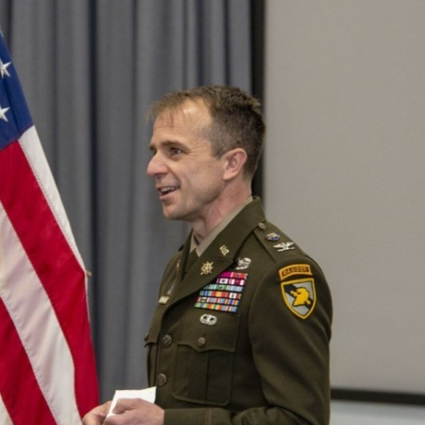
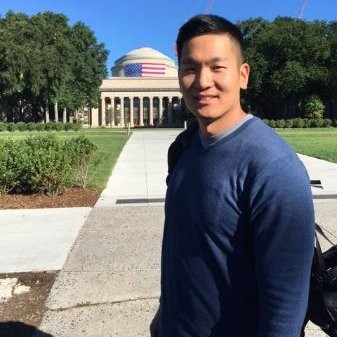
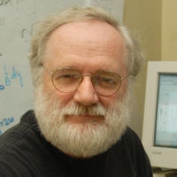

Team Roster
Team Captains
Rebecca Nugent (PI, Pittsburgh Hub)
Meet the team captain , Rebecca Nugent. As the Stephen E. and Joyce Fienberg Professor of Statistics & Data Science and Head of Carnegie Mellon Statistics & Data Science, she brings a game-changing approach to our field. She's played in the big leagues, contributing to and chairing National Academies of Science, Engineering, and Medicine studies and panels, and has bagged some pretty impressive trophies like the Ryan Award for Meritorious Teaching and the ASA’s Waller Education Award.

Nicholas Clark (co-PI, New York Hub)
Nick Clark is a powerhouse with a stat-heavy playbook, specializing in military applications and sports analytics (including e-sports). As the former director of West Point’s Center for Data Analysis and Statistics, he's coached and inspired countless students. He's a major player in promoting diversity in education and training, and outside of the academic world, he's a Colonel in the US Army.
Konstantinos Pelechrinis (co-PI, Pittsburgh Hub)
Kostas Pelechrinis is our secret weapon. An Associate Professor at the University of Pittsburgh, he's a data and network science wizard with a unique focus on sports analytics. He's invented new ways to gather data, and has developed strategies that could even make a pro coach envious. An advocate for diversity in education, he's trained up-and-coming talent through several renowned programs.
Michael Schuckers (co-PI, New York Hub)
Schuckers is our analytics all-rounder. A Professor of Sports Analytics and Data Science at UNC Charlotte, he hits home runs in both sports and academia. A recipient of the ASA’s Section on Statistics in Sports Significant Contributor award, he's consulted with major MLB and NHL teams. He's also a prolific author.
Rodney X. Sturdivant (co-PI, Baylor Hub)
Rodney Sturdivant is our sports stats coach. As Director of the Statistical Consulting Center and Associate Professor at Baylor University, he's developed new training drills and resources for statistical education. He's done some serious research using football, baseball, and hockey data, and has co-authored a highly cited text on logistic regression (>60,000 citations!)
The MVP
Samantha Nielsen (Pittsburgh Hub)
Take a moment to meet Samantha Nielsen, the powerhouse Associate Director of Academic Programs at Carnegie Mellon Statistics & Data Science, constantly driving forward with innovative plays in the academic field. With a Master's in Human and Community Development and a Bachelor's in Psychology and Family Studies, Sam brings a diverse playbook to our team. From her days as an academic coach to her stints in project management and tech implementation, she's always had her eye on the end zone. Her dynamic leadership and expertise are key to scoring our project's goals.
The Lineup
Peter Freeman (Senior Personnel, Pittsburgh Hub)
Peter Freeman is our playbook strategist. An Associate Teaching Professor at Carnegie Mellon University's Department of Statistics & Data Science and Director of the Undergraduate Program, he's a pro at scoping out and building educational materials. His developed course materials have proven to be a game-changer in statistical learning workshops and summer sports analytics research programs.
Michael P. B. Gallaugher (Baylor Hub)
Mike Gallaugher is our classification and clustering quarterback. An Assistant Professor at Baylor University's Department of Statistical Science, he brings a unique interest in complex data types like higher order data, mixed data, and clickstream data. He's also a board member of The Classification Society, keeping us in line with the best practices.

Andrew Lee (Senior Personnel, New York Hub)
Andrew Lee is our operations research and transportation models linebacker. As the Director of West Point’s Center for Leadership and Diversity in STEM, he's an innovative educator with a unique flair for pedagogy. His expertise extends to military applications, unmanned aerial systems, and disaster relief.

Robin Lock (Senior Personnel, New York Hub)
Robin Lock is our stats education learning goal-tender. A distinguished professor at St. Lawrence, he's a seasoned player in the field of stats education. He's a fellow of the ASA and the inaugural winner of the Waller Distinguished Teaching Career Award. He's been instrumental in sharing interesting data and applications for teaching statistics, and his contributions to the field have earned him several major awards.
Brian Macdonald (Yale Hub)
Brian Macdonald is our industry scout. A Senior Lecturer and Research Scientist at Yale University's Department of Statistics & Data Science, he’s previously been on the front lines in the sports industry with ESPN, Florida Panthers Hockey Club, and West Point. He brings real-world sports industry experience and a unique understanding of sports data to the team.
Joshua Patrick (Baylor Hub)
Joshua Patrick is our data analyst outfielder. A Lecturer at Baylor University's Department of Statistical Science, he brings expertise in spatio-temporal modeling and statistics education to our team. He's developed innovative courses and has worked with the Baylor baseball team, proving that he knows how to hit analytical home runs.
Grant Morgan (Baylor Hub)
Let's hear it for our educational maestro, Grant B. Morgan, a renowned Professor and Coordinator of the Quantitative Methods graduate programs at Baylor School of Education. With his expertise in latent variable models, psychometrics, and nonparametric statistics, he's our go-to guy for methodological investigations and advanced quantitative modeling to measure outcomes and success. Grant has an impressive scorecard with over 100 publications. His active contributions to AERA-affiliated organizations are just the icing on the cake.
Ivan Ramler (Senior Personnel, New York Hub)
Ivan Ramler is our e-sports analyst and digital games strategist. As an Associate Professor at St. Lawrence University's Department of Mathematics, Computer Science, and Statistics, he has made waves in the esports research community and won a Best Paper Award for his work on League of Legends. Beyond his remarkable skills on the Rift (having reached Bronze III), he has been instrumental in improving educational experiences for underrepresented and/or economically challenged students.
Ron Yurko (Senior Personnel, Pittsburgh Hub)
Say hello to Ron Yurko. He's an Assistant Teaching Professor at Carnegie Mellon's Department of Statistics & Data Science, and a rising star in the field of statistics & data science. His game plan involves developing cutting-edge methods at the crossroads of inference and machine learning. Whether it's statistical genetics or sports analytics, he's always ready to bring his A-game.
Philipp Burckhardt (Pittsburgh Hub)
Step into the tech zone with Philipp Burckhardt, Director of E-Learning, Analytics, and Technology at Carnegie Mellon University. At the Department of Statistics & Data Science, he is leading development of the ISLE e-learning platform. Off the field, he is co-developing open-source software for the web, most importantly stdlib, a standard library for JavaScript with a focus on scientific computing and statistics.
Gordon Weinberg (Pittsburgh Hub)
Meet Gordon Weinberg, our skilled team trainer. Currently an instructor in the Department of Statistics & Data Science at Carnegie Mellon University, Gordon's been a natural teacher since his elementary school days. He's scored big with recognitions such as the CMU Interfraternity Council and Panhellenic Council Award for his leadership and mentoring skills.